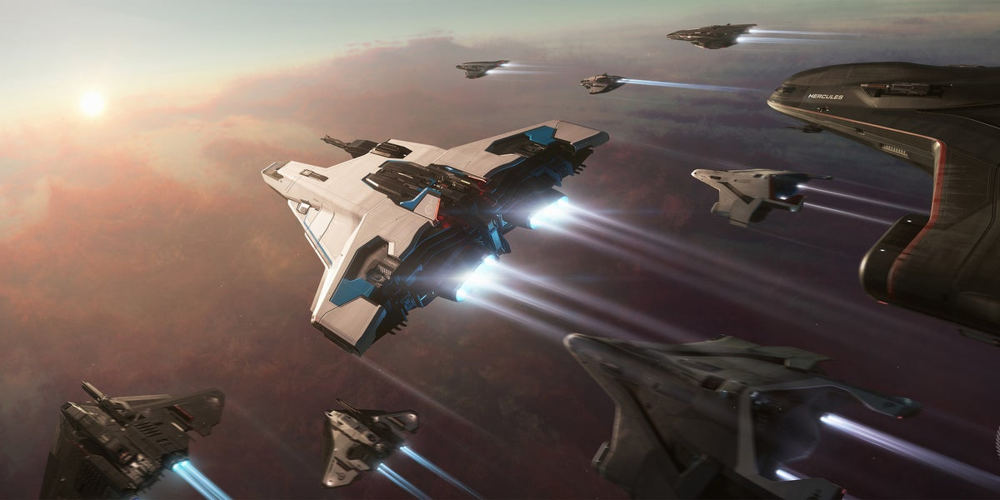
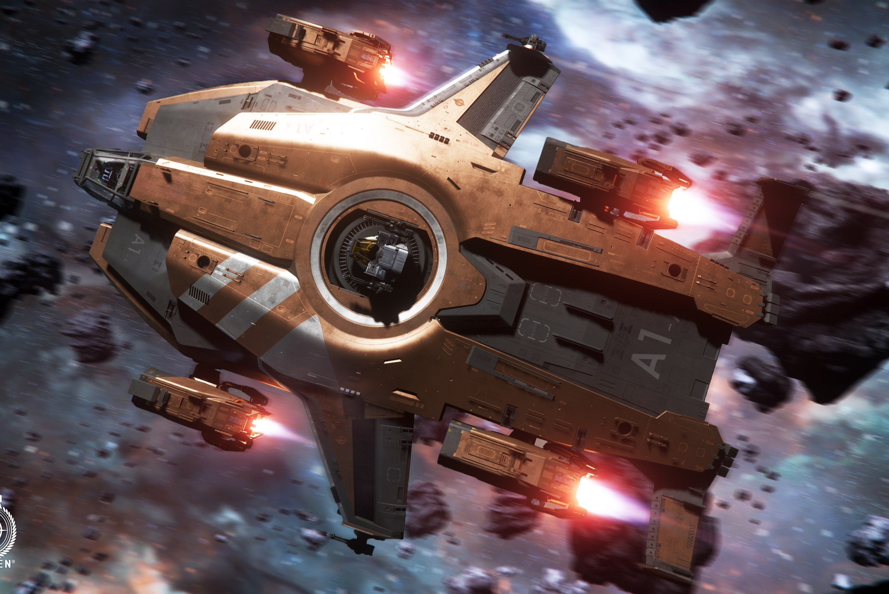
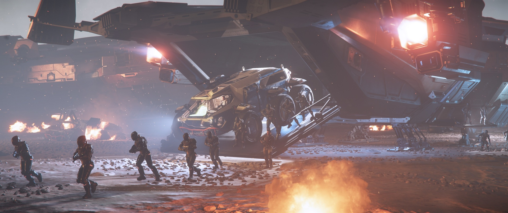

Játékról
A Star Citizen egy ambiciózus űr szimulátor, amely valós idejű, multiplayer élményeket kínál. A játék célja, hogy a játékosok egy hatalmas, dinamikus világban felfedezhessenek, kereskedhessenek, harcolhassanak és egyéb tevékenységekben vehetnek részt.
A játék világáról
A Star Citizen univerzum egy hatalmas és folyamatosan fejlődő világot kínál, tele különböző bolygókkal, űrállomásokkal, űrhajókkal és egyéb izgalmas helyszínekkel. A játékosok saját karakterükkel navigálhatnak ezen a világon, miközben egyedül vagy csapatban különböző küldetéseket teljesítenek.
A játék fő jellemzői
- Nyílt világ: A Star Citizen hatalmas, nyílt világot kínál, ahol a játékosok szabadon felfedezhetik a galaxist.
- Űrhajó harcok: A játékban a legmodernebb űrhajókat irányíthatjuk, és részt vehetünk izgalmas űrcsatákban.
- Kereskedelem és gazdaság: A játékban lehetőség van árucikkek kereskedelmére,jelenleg még nem befolyásolják a gazdaságot.
- Szerepjáték: A Star Citizen lehetőséget biztosít arra, hogy egyedül vagy csapatban különböző szerepeket töltsünk be a galaxisban.
Miért érdemes játszani?
A Star Citizen nem csak egy űrszimulátor, hanem egy közösségi élmény is, amely lehetőséget biztosít a játékosok számára, hogy barátokkal közösen tapasztalják meg az űr felfedezésének izgalmát. A folyamatos frissítések és a játékosok visszajelzései alapján a fejlesztők folyamatosan új funkciókat és tartalmakat adnak hozzá.
Csatlakozz a galaktikus kalandhoz!
Ha szeretnéd részese lenni ennek a lenyűgöző űr kalandnak, ne habozz! Csatlakozz a Star Citizen közösségünkhöz, és kezdj el játszani most!